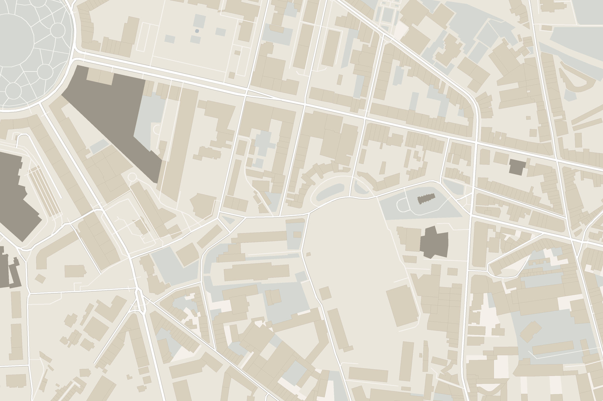

- 6pessoas
- 50 m²segundo o Booking
- 2quartos
- 1casa de banho
O apartamento
Um T2 no 2.º andar do prédio Art Déco da Praça de Pedro Nunes, de 1936, reabilitado entre 2012 e 2016 segundo o dono. Sobe-se por escadas.
Tem dois quartos, cada um com duas camas de solteiro, e uma sala com sofá-cama, para até seis pessoas. A cozinha abre para a sala de jantar e a casa de banho tem chuveiro.
Divisões bastante espaçosas com janelas generosas que permitem o arejamento e a entrada de luz natural.
O que oferece
- Wi-Fi e televisão por cabo
- Ar condicionado
- Aquecimento
- Cozinha aberta para a sala de jantar
- Sofá-cama na sala
- Roupa de cama e toalhas
- Limpeza semanal incluída
- Berço de viagem, a pedido
Horários e regras
- Check-in
- 16:00 – 23:30
- Check-out
- Até às 11:00
- Fumar
- Não
- Festas
- Não
- Animais
- A pedido, sem custo
- Estacionamento
- Privado, a pedido, pago à parte
- Elevador
- Não tem: sobe-se por escadas
Localização
Praça de Pedro Nunes, 112, 2.º, 4050-466 Porto

Avenida da BoavistaRua de Júlio DinisRua da BoavistaRua de Aníbal CunhaLargo de Ferreira LapaRua Sacadura CabralRua de Cedofeita Igreja de São Martinho de CedofeitaShopping Center BrasíliaHospital das Forças Armadas - Polo do PortoMercado do Bom SucessoLargo da PazLargo Luís BrailleLargo do Bom SucessoJardim da Praça de Mouzinho de Albuquerque 112-D Deco 200 m- Metro Carolina Michaelis400 m
- Rotunda da Boavista650 m
- Casa da Música900 m
- Jardins do Palácio de Cristal1,4 km
- Torre dos Clérigos1,6 km
- Estação de São Bento1,9 km
- Ribeira2,4 km
- Praias5 a 7 km
Distâncias calculadas pelo Booking. Do aeroporto, o metro (linha E) chega a Carolina Michaelis sem mudar de linha.
Como chegar

112-D Deco 19 fotografias